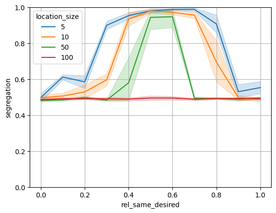

Schelling model on a network
Todo: Build a version using this code but use p2n for network generation: https://agentpy.readthedocs.io/en/latest/agentpy_segregation.html
[1]:
import random
import agentpy as ap
import matplotlib.pyplot as plt
import seaborn as sns
import pop2net as p2n
from pop2net.data_fakers.soep import soep_faker
from pop2net.pop_maker import PopMaker
[2]:
class Agent(p2n.Agent):
def __init__(self, model, *args, **kwargs):
super().__init__(model, *args, **kwargs)
self.rel_same_desired = self.model.p.rel_same_desired
def get_location(self, location_type):
return [location for location in self.locations if isinstance(location, location_type)][0]
def eval(self, location_type, attribute: str):
location = self.get_location(location_type=location_type)
n_same = sum(
[
getattr(self, attribute) == getattr(neighbor, attribute)
for neighbor in location.neighbors(self)
],
)
n = len(location.neighbors(self))
if n > 0:
rel_same = n_same / n
return rel_same
else:
return 1
def move(self, location_type):
old_location = self.get_location(location_type=location_type)
potential_new_locations = [
loc
for loc in self.model.locations
if isinstance(loc, location_type) and loc is not old_location
]
if len(potential_new_locations) > 0:
new_location = random.choice(potential_new_locations)
# !!!! DER FOLGENDE PROZESS MUSS ÜBERARBEITET UND VEREINFACHT WERDEN !!!!
# VIELLEICHT EINE Agent.move(old_location, new_location)-Methode einbauen
old_location.remove_agent(self)
new_location.add_agent(self)
def eval_and_move(self, location_type, attribute):
rel_same = self.eval(location_type=location_type, attribute=attribute)
if rel_same < self.rel_same_desired:
self.move(location_type=location_type)
[3]:
class Work(p2n.Location):
def setup(self):
self.size = self.model.p.location_size
[4]:
class Model(p2n.Model):
def setup(self):
df_soep = soep_faker.soep(size=self.p.n_agents)
self.pop_maker = PopMaker(model=self)
self.agents, self.locations = self.pop_maker.make(
df=df_soep,
agent_class=Agent,
location_classes=[Work],
)
def get_segregation(self):
return sum(
[agent.eval(location_type=Work, attribute="gender") for agent in self.agents],
) / len(self.agents)
def step(self):
random_agent = random.choice(self.agents)
random_agent.eval_and_move(location_type=Work, attribute="gender")
def end(self):
self.report("segregation", self.get_segregation())
[5]:
parameters_multi = {
"n_agents": 100,
"steps": 1000,
"rel_same_desired": ap.Values(0, 0.1, 0.2, 0.3, 0.4, 0.5, 0.6, 0.7, 0.8, 0.9, 1),
"location_size": ap.Values(5, 10, 50, 100),
}
sample = ap.Sample(parameters_multi)
exp = ap.Experiment(Model, sample, iterations=10)
results = exp.run()
Scheduled runs: 440
Completed: 440, estimated time remaining: 0:00:00
Experiment finished
Run time: 0:01:50.643789
[6]:
df = results.arrange_reporters()
df.head()
[6]:
| sample_id | iteration | seed | segregation | rel_same_desired | location_size | |
|---|---|---|---|---|---|---|
| 0 | 0 | 0 | 55849464144814520425424030763122635256 | 0.440 | 0.0 | 5 |
| 1 | 0 | 1 | 211952665350174212021854441892063667189 | 0.450 | 0.0 | 5 |
| 2 | 0 | 2 | 95336540371422340631487791470984061626 | 0.490 | 0.0 | 5 |
| 3 | 0 | 3 | 82918173932395856857031554410015238987 | 0.525 | 0.0 | 5 |
| 4 | 0 | 4 | 129982160651370599410017425903083143133 | 0.530 | 0.0 | 5 |
[7]:
df.location_size = df.location_size.apply(lambda x: str(x))
sns.lineplot(
data=df,
x="rel_same_desired",
y="segregation",
hue="location_size",
)
plt.grid()
plt.ylim(0, 1)
[7]:
(0.0, 1.0)
